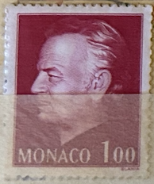
| SOURCE | TITLE| IMAGE MATCH | click to source page |
| eBay | STAMP / TIMBRE DE MONACO N° 1080 ** EFFIGIE DU PRINCE | eBay | 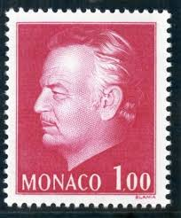 |
| eBay | Monaco #YT1519 MNH 1986 Prince Rainier Albert Definitives Slania [1513] | eBay | 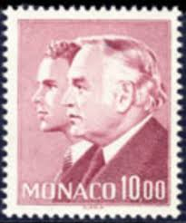 |
| Bob Shop | Monaco - Monaco - 1974 - Used was listed for 0.00 on 3 Oct at 21:06 by PostagePaid in Kraaifontein (ID:656009000) | 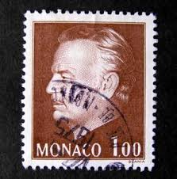 |
| eBay | MONACO 1974 TIMBRE 993 PRINCE RAINIER CELEBRITE' neuf** MNH | eBay | 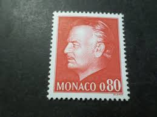 |
| eBay UK | Monaco 1974-80 SG#1155, 2f30 Prince Rainer III MNH #E95297 | eBay UK | 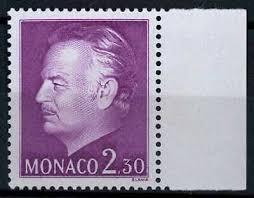 |
| eBay | Monaco 1986 #1513 Prince Rainier III and Hereditary Prince Albert - Used | eBay | 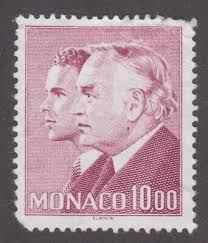 |
| Colnect | Stamp: Prince Rainier III (1923-2005) (Monaco(Planning of the Stamp and Coin Museum) Mi:MC 2285,Sn:MC 1995,Yt:MC 2034,Sg:MC 2266,Un:MC 2040 📮 | 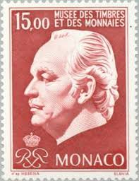 |
| Filatelia Longobardi | Filatelia Longobardi | 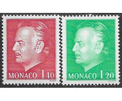 |
| Jay Smith & Associates | Jay Smith & Associates: Slania: Monaco: Stamps - 1981-1985 | 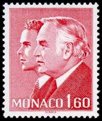 |
| PicClick FR | TIMBRE MONACO OBLITÉRÉ sur carte postale SAS Rainier III - 11/04/1950 EUR 1,00 - PicClick FR | 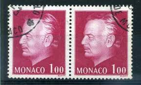 |
| Todocolección | monaco 1927 -yvert 94 º usado - príncipe luis i - Buy Antique stamps of Monaco on todocoleccion | 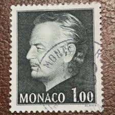 |
| Alamy | Monaco postage stamp hi-res stock photography and images - Alamy | 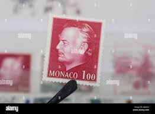 |
| Jay Smith & Associates | Jay Smith & Associates: Slania: Monaco: Proofs | 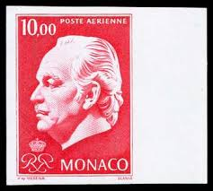 |
| Dreamstime.com | 309 Monaco Stamps Stock Photos - Free & Royalty-Free Stock Photos from Dreamstime | 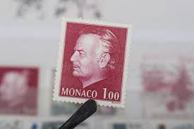 |
| Briefmarken-Versand-Welt | 1980 Freimarken: Fürst Rainier III. - Briefmarken-Versand-Welt, 1,20 € | 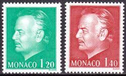 |
| eBay | Monaco 1160 - 62 Freimarken Fürst Rainier III. ** (mnh) | eBay | 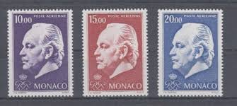 |
| eBay | Monaco Stamp, Scott 944 MLH | eBay | 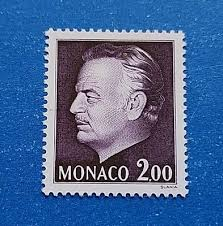 |
| eBay | Ships, Boats Postage Monacan Stamps for sale | eBay | 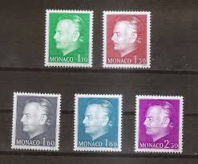 |
| eBay | MONACO 945 - Prince Rainier III "1978 Olive Bister" (pc27842) | eBay | 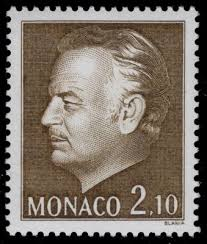 |
| Todocolección | 34728 mnh monaco 1960 75 aniversario del sello - Acheter Timbres anciens de Monaco sur todocoleccion | 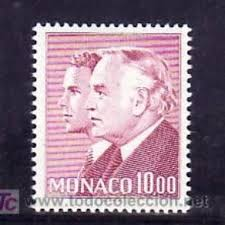 |
| nordfrim.com | Buy Monaco 1974 - YT PA 97-99 - Mint | 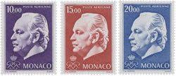 |
| eBay | MONACO Sc 1255-56 NH ISSUE OF 1980 - PRINCE RAINIER | eBay | 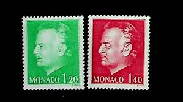 |
| eBay | Monaco Stamp Airmail PA No. 98 New ** MNH | eBay | 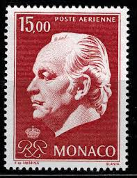 |
| Colnect | Monaco : Stamps [Year: 1982] [1/6] : Colnect 📮 | 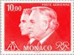 |
| eBay | 2075] Monaco 1980, MNH**, Postfrisch, Yvert #1233-1234 | eBay | 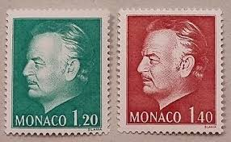 |
| eBay | MONACO 1978. Prince Rainier. Complete series of 6 mint stamps** (4668° | eBay | 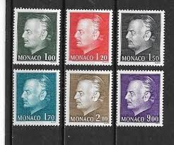 |
| eBay | Monaco 1982 Stamp 1336, Princes Rainier, Albert New | eBay | 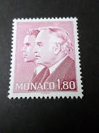 |
| Estudi Filatelic | Correo ordinario | 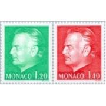 |
| eBay | 1978 Prince Rainier III ,Royalty,Definitive stamps,Monaco,Mi.1325,MNH | eBay | 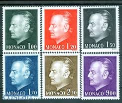 |
| eBay | Monaco 933 set of 5 issued 12.23.1974,MNH. Prince Rainier III. | eBay | 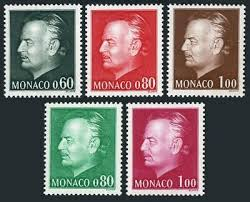 |
| eBay | Stamp France Monaco Effigy Of The Prince Palace King No. 1206 New ** MNH 1979 | eBay | 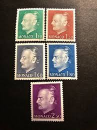 |
| brumstamp | Monaco 1980 Prince Rainier III/ Royalty/ Royal/ Definitives/ People 5v set mc1161 | 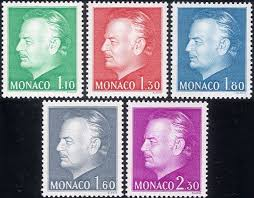 |
| eBay | Monaco #YT1481 MNH 1985 Prince Rainier Albert Definitives Slania [1509] | eBay | 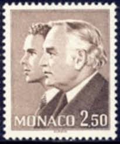 |
| eBay | 1974 Prince Rainier III ,Royalty,Definitives,Monaco,Mi.1143,MNH | eBay | 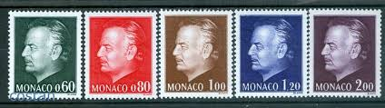 |
| Bob Shop | Monaco - Monaco - Miniature sheet - 1974 - MNH was listed for 0.00 on 12 Dec at 21:06 by PostagePaid in Cape Town (ID:663362733) | 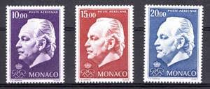 |
| eBay | MONACO Sc 1994-6 NH ISSUE OF 1996 - PRINCE RAINER Sc$15 | eBay | 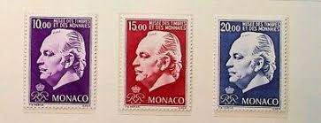 |
| Amazon.com | Amazon.com: Monaco 1401-1405 (Complete.Issue.) unmounted Mint/Never hinged ** MNH 1980 Rainier (Stamps for Collectors) : Toys & Games | 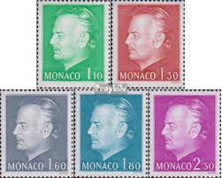 |
| Amazon.com | Amazon.com: Monaco 1143-1147 (Complete.Issue.) unmounted Mint/Never hinged ** MNH 1974 Rainier (Stamps for Collectors) : Toys & Games | 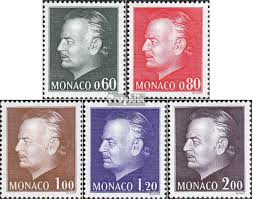 |
| eBay | MONACO Sc#1994-1996 1996 Prince Rainer III MNHOG VF/XF (10-353) | eBay | 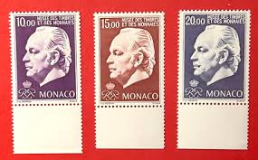 |
| eBay | Monaco #YT1589 MNH 1987 Prince Rainier Albert Definitives Slania [1507] | eBay | 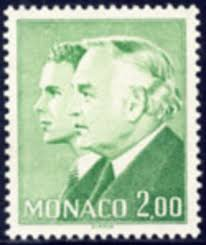 |
| eBay | MONACO 1982 timbre 1336, Princes Rainier, Albert neuf** | eBay | 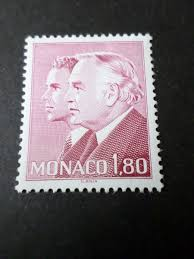 |
| lastdodo.de | Albert II van Monaco [1958] Briefmarken-Katalog - LastDodo | 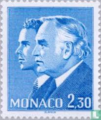 |
| Free stamp catalogue | Stamp 2024, Monaco Definitive, international 1v, 2024 - Collecting Stamps - Freestampcatalogue.com - The free online stampcatalogue with over 500.000 stamps listed. | 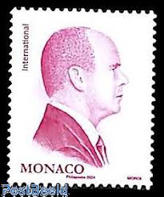 |
| eBay | Monaco 1974 Prince Rainier III/Royalty/Definitives/People 3v Air Mail (mc1163) | eBay | 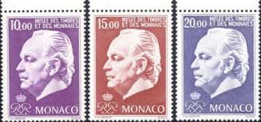 |
| eBay | MONACO - 1989-91 PRINCE RAINIER III SCOTT#1673A - 1V MINT NH | eBay | 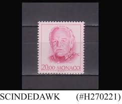 |
| eBay | FDC 1990 - De Roger Bissière (2785) | eBay | 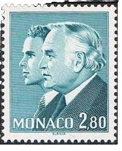 |
| eBay | Monaco 1673A, MNH 1991 20.00 Franc Prince Rainier III Issue. x34876 | eBay | 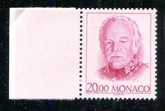 |
| eBay | Monaco Defins Prince Rainier III & Albert 1982 MNH-28 Euro | eBay | 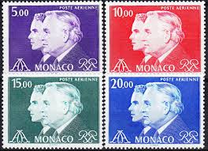 |
| eBay | MONACO Sc #C88 INCPL MNH SINGLE - HI-VAL - PRINCE RAINIER III and PRINCE ALBERT | eBay | 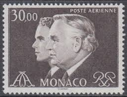 |
| Azur Philatélie | timbres de Monaco de l'année 2024 - Azur Philatélie | |
| eBay | MONACO. Air Post Stamps. Prince Rainier III. 1974. Scott C81-C83. MNH | eBay | |
| eBay | Monaco MiNr. 1160-1162 Mint Condition (AJ 060) | eBay | |
| LastDodo | Albert II van Monaco [1958] postzegelcatalogus - LastDodo | |
| eBay UK | Monaco 1251-1254 (complete.issue.) unmounted mint / never hinged 1977 clear bran | eBay UK | |
| Alamy | Stamp monaco hi-res stock photography and images - Alamy | |
| eBay | Monaco Stamp 1981 SC# 1294 2.30f bl ' Rainier III & Prince Albert ' MNH | eBay | |
| lastdodo.fr | Albert II de Monaco [1958] Catalogue de timbres - LastDodo | |
| Jay Smith & Associates | Jay Smith & Associates: Slania: Monaco: Stamps - 1991-current | |
| eBay | MONACO Prince Rainier MNH set | eBay | |
| eBay | Monaco 1982 Prince Rainier and Albert MNH S3341 | eBay |